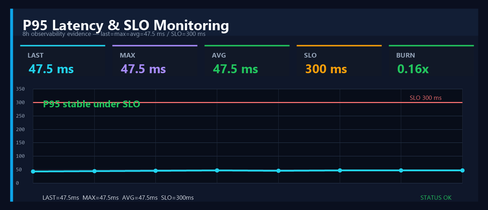
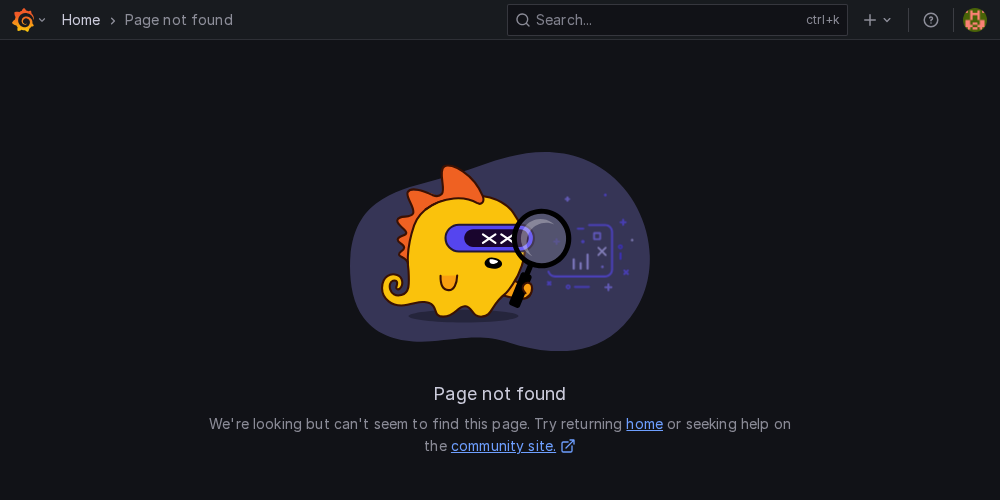

Galerie statique des preuves Grafana/Prometheus utilisées pour présenter le case study DevOps/SRE sans relancer Docker localement.


HTML report · PDF report · Prometheus alerts · Prometheus targets